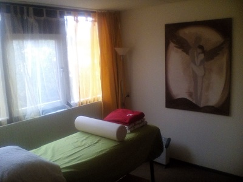
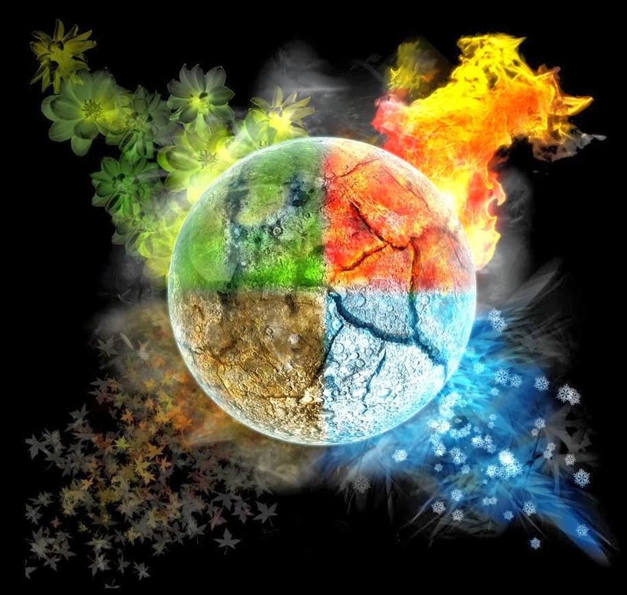
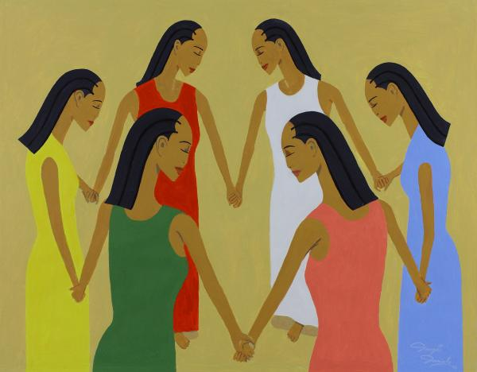

Agenda
Allereerst een opmerking over het aanmelden voor de cursussen en workshops. Je kunt je voor alles aanmelden via mail (liedvandemerel@gmail.com) of facebook-pb, behalve voor de geaccrediteerde cursussen die ik geef voor instituut CAM. Je vindt de aanmeldlink van die cursussen in de beschrijving, helemaal onderaan!
De volgende cursussen en workshops staan op het programma voor 2018-begin 2019:
| Datum | Workshop | Prijs | Plaats | Tijd |
|---|---|---|---|---|
| 07-09-2018 | Open Huis | Gratis | Emmen | 18:30 - 20:30 |
| 14-09-2018 | Welkom in de Wereld deel 1, geaccrediteerd | €150,- | Utrecht | 9:30 - 16:30 |
| 22-09-2018 | Verdiepingsdag Zielsliefde | €60,- | Emmen | 10:00 - 16:00 |
| 30-09-2018 | Healing- en Verbindingsochtend | €20,- | Emmen | 10:00 - 12:00 |
| 21-10-2018 | Healing- en Verbindingsochtend | €20,- | Emmen | 10:00 - 12:00 |
| 26-10-2018 | Vrouwencirkel | €15,- | Emmen | 10:00 - 12:00 |
| 21-10-2018 | Healing- en Verbindingsochtend | €20,- | Emmen | 10:00 - 12:00 |
| 21-10-2018 | Welkom in de Wereld deel 2, geaccrediteerd | €150,- | Utrecht | 9:30 - 16:30 |
| 09-12-2018 | Healing- en Verbindingsochtend | €20,- | Emmen | 10:00 - 12:00 |
| 14-12-2018 | Vrouwencirkel | €15,- | Emmen | 10:00 - 12:00 |
| 11, 18 en 25 januari 2019 | 3-daagse geaccrediteerde cursus Wetenschap en Spiritualiteit | €275,- | Utrecht | 9:30 - 16:30 |
Open Huis

Voor het eerst organiseer ik een open huis. Wil je me een keer ontmoeten en mijn werkplek bekijken? Kom gezellig langs! Ik zorg voor thee en wat lekkers.
Het Open Huis is gratis, aanmelden stel ik op prijs. Plaats: Balingerbrink 218, Emmen. Tijd: 18:30-20:30.
Healing- en verbindingsochtenden
 Eén keer per maand organiseer ik een healing-ochtend om ons te verbinden met onze Begeleiders, onszelf en elkaar en waarbij we gaan oefenen met healing van onszelf en anderen. Afhankelijk van de energie, doen we meditaties, bespreken we een thema, of doen we oefeningen, een lied of een gebed. In het tweede uur gaan we oefenen met healing. Het maakt niet uit of je ooit eerder een healingcursus hebt gedaan en van welke richting. Je bent even welkom met een Reikidiploma als met een diploma Shamballah, therapeutic touch, BARS, etc. Let op, een diploma is nergens voor nodig, healing is een aangeboren gave van iedereen, die kan worden ontwikkeld in jouw eigen tempo!
Eén keer per maand organiseer ik een healing-ochtend om ons te verbinden met onze Begeleiders, onszelf en elkaar en waarbij we gaan oefenen met healing van onszelf en anderen. Afhankelijk van de energie, doen we meditaties, bespreken we een thema, of doen we oefeningen, een lied of een gebed. In het tweede uur gaan we oefenen met healing. Het maakt niet uit of je ooit eerder een healingcursus hebt gedaan en van welke richting. Je bent even welkom met een Reikidiploma als met een diploma Shamballah, therapeutic touch, BARS, etc. Let op, een diploma is nergens voor nodig, healing is een aangeboren gave van iedereen, die kan worden ontwikkeld in jouw eigen tempo!
Met mijn jarenlange ervaring als energetisch therapeute en docente bij verschillende instituten kan ik je de begeleiding geven die je nodig hebt om grondig te leren healen. Ik leer je zelf helder voelen, zien en horen, zodat je weet wat je doet en ik geef je heldere achtergronden, zodat je ook begrijpt wat je doet. Ik kan daarbij heel inspirerend zijn, maar zorg voor twee benen stevig op de aarde, zodat je je veilig spiritueel kunt ontwikkelen in een tempo dat jouw energieveld aan kan.
Dus wil je leren om jezelf, je gezin, vrienden of professioneel te healen? Wil je gewoon regelmatig oefenen, omdat het gewoon zo ontzettend leuk is om te doen? Wil je andere mensen ontmoeten die ook bezig zijn met spiritualiteit? Je bent van harte welkom!
Prijs: 20 euro per ochtend. Ik zorg voor thee. Je kunt je per ochtend aanmelden. Voor data en tijden, zie de tabel bovenaan deze pagina.
Nb. heb je ooit last gehad van een te snelle spirituele ontwikkeling of lijk je maar steeds niet verder te komen? Tijdens de ochtenden is hier aandacht voor, maar een persoonlijk consult is ook mogelijk. Kijk hiervoor onder het kopje 'consult' in het menu. Vooral als je de neiging hebt 'uit je aura te schieten', of als je erg hooggevoelig bent, is dit aan te raden voorafgaand aan een healingcursus, of daarnaast.
Zielsliefde
 Een dag over zielsliefde: wat is het? Hoe vind je het? Hoe hou je het? Hoe laat je het los? Hoe breng je de ziel terug in je bestaande relatie?
Een dag over zielsliefde: wat is het? Hoe vind je het? Hoe hou je het? Hoe laat je het los? Hoe breng je de ziel terug in je bestaande relatie?
Over magnetische aantrekkingskracht, zielsverwanten, tweelingzielen, magie, onvoorwaardelijke acceptatie en menselijke tekortkomingen, relaties, alleen-zijn, begin, einde en duurzaamheid.
Zielsliefde is ondubbelzinnig, onontkoombaar, onvoorwaardelijk vanuit je essentie liefhebben. Hoe uit zich dat in je leven? Hoe geraak je in die toestand, waar alle grenzen wegvallen?
Ik vertel je over mijn ervaringen met mijn man, mijn moeder en mijn kinderen. Over telepathie, samen voelen, samen ademen, samen dromen, samen godservaringen beleven, maar ook over de connectie die ik leg met mensen die verder van me af staan.
We hebben het over de uitdaging om je 'vijanden' lief te hebben, maar juist ook de uitdaging om je partner lief te hebben in het spanningsveld tussen eigenliefde en gevende liefde. Welke rol spelen mededogen, passie, lust, bezitterigheid en vrijheid? We bewegen ons via symbolen, verhalen en muziek naar een dieper begrip van onze ziel en zijn enige grondstof: Liefde.
Een dag vol ervaringsgericht leren, verdiepende achtergronden, concrete tips en uitwisselingen.
Alvast meer lezen over zielsliefde? Lees de pagina's Zielsliefde en Hemel-en-Aarde-healing.
Je kunt je aanmelden door me een mailtje te sturen of een berichtje op facebook.
Neem een lunchpakketje mee, een paar warme sokken en eventueel een meditatiekussentje of -krukje. (Er zijn ook gewoon stoelen aanwezig, natuurlijk.)
Workshopdag yoiken / native zang

'When you yoik someone,
they remember who they are.
When you yoik the sea,
the sea remembers it's origin.'
Yoiken is een vorm van woordenloos zingen. Het is een levende traditie bij de Sámi.
Een yoik is als een naam, maar dan diepgaander. Iedere Sámi heeft een eigen naamyoik.
Maar ook alles uit de natuur heeft een eigen yoik. Bijvoorbeeld een dier, een boom, een berg, of een bepaalde plek waar je heen gaat om tot jezelf te komen. Die plek heeft een eigen yoik.
Een yoik is geen lied over iets, het is dat iets zelf.
Je verbindt je met de ander, of met de natuur, via de yoiks die hun wezen uit maken. Daarom kun je sommige yoiks ook alleen maar zingen op de plek waar ze horen.
De workshop yoiken is dan ook geen gewone workshop zingen. We leren geen liedjes aan.
Tijdens deze workshop gaan we binnen in de wereld waar klank en ziel één zijn, waar je met een lied de ander werkelijk kunt naderen.
Waar je met een lied het wezen van de Adelaar kunt voelen, de Berk kunt kennen en de Marter kunt volgen.
De locatie van de dag wisselt steeds, om ook in dat opzicht in de nomadische traditie te blijven. Deze zomer komen we bij elkaar in 'Thuishaven' in Zeewolde. Het prachtige voedselbos biedt meer dan genoeg plekjes om je terug te trekken en je te verbinden met de natuur en met jezelf. In de polder is de wind altijd en overal aanwezig, dus die zullen we zeker gaan yoiken!
In de gezamenlijke gedeeltes verbinden we ons met elkaar. Hoe yoik je een ander? Herken je jouw eigen yoik?
Met zang en stilte komen we in een verruimd bewustzijn, waar we de diepere laag achter de werkelijkheid leren kennen, zien en voelen.
Op de klanken van onze ziel, komen we Thuis.
Neem kleding mee die past bij het seizoen. We kunnen binnen zitten, maar gaan ook naar buiten, dus houd rekening met het weer. Deze aflevering is zonder sjieke lunch (daarom is ie ook goedkoper). Neem iets te eten mee om te delen. Heb je een allergie? Zorg dan dat je gerecht in ieder geval genoeg is voor jezelf (voor het geval je niets anders kunt eten). Er is een keuken op de locatie. Als je een sjamanendrum hebt, mag je die meenemen.
Zoek goed uit hoe je op de locatie kunt komen, kijk daarvoor op de website van Thuishaven (zie boven). Wil je carpoolen? Voel je dan vrij een bericht te plaatsen in het evenement op Facebook!
Overnachten is op 'Thuishaven' ook mogelijk. Neem hiervoor contact op met Jeroen.
Je kunt je opgeven door me een mail te sturen of een pb op facebook.
Moderne zangers die yoiken op youtube (playlist):
Elementen van Hemel en Aarde
Genezen op het snijvlak van wetenschap en spiritualiteit

Ben je geïnteresseerd in spiritualiteit, persoonlijke ontwikkeling, maar ook in natuur- en scheikunde? Vraag je je af wat het verband is tussen licht en je alvleesklier? Of tussen een ego-perspectief en je ontstekingswaarden? Deze cursus verbindt een groot aantal gebieden van wetenschap, cultuur en spirituele inzichten met elkaar, zodat je jezelf en de wereld om je heen vanuit veel verschillende facetten kunt bekijken en begrijpen.
De rode draad in deze cursus wordt gevormd door verschillende scheppingsverhalen uit de Kabbalah, die ik verder uitleg aan de hand van de antroposofie, astronomie en scheikunde. We doorlopen het scheppingsproces dat elke seconde plaatsvindt, van je kroonchakra tot aan je wortelchakra. Daarnaast verdiepen we ons in de schepping met behulp van de vier elementen uit de Griekse en Sjamanistische traditie.
We haken aan bij schrijvers en wetenschappers als Eben Alexander en Anna Terruwe. Met verschillende oefeningen en 'soul-searching' ontdekken we welke vermogens we hebben, hoe we functioneren in gezondheid en ziekte en welke vermogens we als mens nog kunnen ontwikkelen. We gaan bezig met beweging, dans, klei, maar ook met oefeningen om het innerlijk Zicht te bevorderen, of het helder weten.
Enerzijds geeft deze cursus je intuïteve ontwikkeling handen en voeten in aardse wetenschap, anderzijds helpt deze cursus je je aardse kennis te verbinden met de grotere spirituele werkelijkheid waar je deel van uit maakt. Je integreert je hemelse en aardse kanten, om een geïnspireerd mens en/of behandelaar te worden, met beide voeten op de grond.
Met andere woorden, wil je begrijpen met je hart én je hoofd? Ervaren én filosoferen? Zoveel mogelijk aspecten van jezelf aanspreken en de samenhang voelen in jezelf en tussen jou, de Ander, de hemel en de aarde? Kom dan zeker meedoen!
Voor wie is deze cursus bedoeld?
Voor iedereen die verder wil dan de basis. Ben je niet bang om jezelf en een ander (soms letterlijk) in de ogen te kijken, hoor je graag verhalen én houd je ervan om zowel met je hoofd te begrijpen als met je hart te ervaren? Dan is deze cursus voor jou.
Deze cursus is geaccrediteerd voor CAM-therapeuten, maar ook uitermate geschikt voor professionals uit het reguliere werkveld die zich willen verdiepen in het energetische wereldbeeld dat ten grondslag ligt aan alternatieve geneeswijzen.
Programma
Elk thema is gebaseerd op een chakra en een corresponderend deel van lichaam en geest. We volgen een emotie, zien hoe deze via energie verandert in een lichamelijk, scheikundig te volgen proces en wat er concreet gebeurt als negatieve emoties ziekte veroorzaken.
Elk thema heeft een kennisdeel en een ervaringsdeel. Thema's zijn achtereenvolgens:
vijandschap en eenheid/bijnieren, zenuwstelsel en stress
flow/lymfe, bloed en nieren
levensvuur/energiehuishouding
liefde en mededogen/hart, longen en handen
Waar-zeggen en groei/schildklier en stem
het oog dat alles ziet/hersenen en zes zintuigen
overgave
Er is ruimte om je eigen inbreng in te passen in het beeld dat zich ontvouwt, bijvoorbeeld vanuit je eigen vakdiscipline als natuurgeneeskundig therapeut, of vanuit eerdere opleiding en/of (levens)ervaring.
Data, plaats, kosten
Data 11, 18 en 25 januari 2018
Tijd 9:30-16:30u
Plaats Koningsweg 2, Utrecht (CAM-instituut)
Kosten € 275,-
Je kunt je aanmelden via instituut CAM. De informatie over de inhoud van deze cursus is op mijn eigen pagina leidend, maar de aanmeldinformatie vind je bij instituut CAM.
Vrouwencirkel

De vrouwencirkel bij mij thuis is eenvoudig en warm. Met ruimte voor jou en alles wat je wel, of juist niet wilt delen. Ruimte voor stilte, muziek, verhalen, vragen, luisteren, antwoorden of loslaten, maar vooral: samen Zijn.
We maken de cirkel samen tot wat-ie is. Neem dus vooral jezelf mee. Er is geen vaststaand programma, wel een thema. Voor de cirkel van 26 oktober is dit 'zie het licht in de ander en jezelf'. Je bent welkom om te delen wat met dit thema te maken heeft, maar we wijken er evengoed vanaf als dat beter voelt. Kortom, een vrouwenkring zoals-ie bedoeld is: voor en door jou, met ruimte voor elkaars unieke wezen.
Aanmelden kan via mail, telefoon of facebook. Je bent van harte welkom in de kring!
Voor de mannencirkel bij Anno, bezoek www.stilteretraite-indenatuur.nl.
Interculturele Aspecten van Natuurgeneeskundige Therapie
 Wil je je bekwamen in het geven van therapie in een interculturele context? Heb je cliënten uit een andere cultuur, wil je graag voorlichting geven over jouw therapievorm in interculturele context, of doe je wel eens (vrijwilligers)werk in een opvangcentrum? Met deze cursus kom je goed beslagen ten ijs!
Wil je je bekwamen in het geven van therapie in een interculturele context? Heb je cliënten uit een andere cultuur, wil je graag voorlichting geven over jouw therapievorm in interculturele context, of doe je wel eens (vrijwilligers)werk in een opvangcentrum? Met deze cursus kom je goed beslagen ten ijs!
Alternatieve geneeswijzen werden tot nu toe vooral ingezet door autochtonen met een hogere opleiding. Dat is echter aan het veranderen. Zowel alternatief therapeuten als cliënten met een andere culturele achtergrond doen hierin verschillende toenaderingspogingen. Alternatief therapeuten ontplooien bijvoorbeeld initiatieven richting opvangcentra of organiseren voorlichtingsactiviteiten bij interculturele organisaties. Allochtone cliënten hebben zowel vanuit de eigen cultuur als vanuit de Nederlandse cultuur interesse in en vragen over alternatieve geneeswijzen.
Hebben zij eenmaal besloten tot een alternatieve behandeling, spelen er bij allochtone cliënten vaak specifieke gezondheidsproblemen en zijn er specifieke factoren in de omgeving waar je rekening mee kunt houden. Kennis van deze achtergrond en interculturele aspecten van de behandeling bevordert een snelle diagnose, een adequate behandeling en een goede relatie tussen therapeut en cliënt.
Voor wie is deze cursus bedoeld?
Natuurgeneeskundige therapeuten die zich willen verdiepen in het adequaat behandelen en inspirerend voorlichten van mensen met een niet-Nederlandse achtergrond.
Programma
We verkennen verschillende wereldbeelden en invloeden van religie en wetenschap op alternatieve geneeswijzen in andere culturen. We gaan uitgebreid in op veel voorkomende (fysieke en psychische) gezondheidsproblemen en omgevingsaspecten van allochtonen en hoe we deze kunnen integreren in de behandeling. Verder leren we vaardigheden aan in de omgang met cliënten met een andere culturele achtergrond en kijken we hoe je effectief een brug kunt slaan door middel van individuele en groepsvoorlichting over alternatieve geneeswijzen.
Je mag veel real-life verhalen verwachten, maar ook veel achtergrondkennis en praktische tips. Bovendien doe je relevante kennis op om je behandelprotocollen mee aan te vullen.
Je kunt je aanmelden via Instituut CAM. De informatie over de inhoud van deze cursus is op mijn eigen pagina leidend, maar de aanmeldinformatie vind je bij instituut CAM.